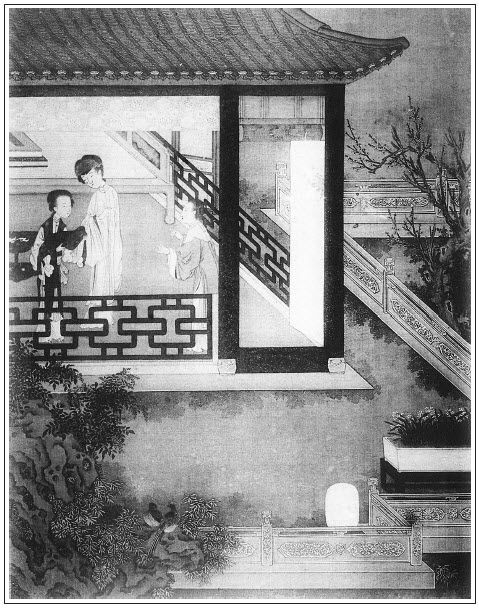

張回自黃四等還金後，至此文送桌面時，已隔無限文字，卻倒序伯爵與黃、李二人趕到相會之說。似屬脫節。上文，看他止用正值西門慶在前廳打發桌面一語接入，便使一枝筆如兩邊一齊寫來，無一邊少停一筆不寫，文章雙寫之能，純史公得意之法，被他學熟偷來也。
算利以金，是欲以金子動之地。即以金子轉算又說之，是又以銀子說之也。人情以貪而吞餌，伯爵豈能欺人哉？人自受欺耳。
一部內凡數書伯爵關目，如簪花飲酒等情，幫嫖追歡等事，皆是以色動人。後文「山洞」、「隔花」、「月兒」處等戲，又是因其喜怒而吮舔之。如此回勸當銅鑼，方是特書以財而趨奉之也。究之其凡趨奉處皆以財，而此則以他人之財奉承之，以足李智、黃四之意。蓋前此西門未提刑，可以嫖，則惟以嫖誘之；此後西門雖有時而嫖，然實不敢嫖，故以戲悅之。此回乃西門官興正新，財念方濃之時，故即以財勢鼓惑之，寫趨附小人，真寫盡了也。
內中一路寫桂姐，有三官處清事如畫。必如此隱隱約約，預藏許多情事，至後文一擊，首尾皆動。此文字長蛇陣法也。
寫銀姐與瓶兒，一對於事幹母子如畫，月娘與桂姐，一對有心的，又如畫。
月娘認桂姐，是初得官而心驕，不過悅桂姐之趨奉。瓶兒解衣，是即得寵而心悲，欲借銀姐為消遣悶懷之人。故桂姐少拂月娘而即教，銀兒至瓶兒死而終合也。世也居權貴以自嬌，與同輩爭榮寵者，其各趨附之兒，當亦如是也。
此處所當之鑼，乃於瓶兒死同穴喪禮內映出，真令人熱腸冰冷。
屏風者，瓶兒也。一解衣銀姐，則為銀瓶。故老馮之蹤跡，與瓶兒疏而不合矣。李三、黃四還金日，已寓不久之意，至此，又一番透漏瓶沉消息也。
詞曰：
徘徊。相期酒會，三千朱履、十二金釵。雅俗熙熙，下車成宴盡春台。
好雍容、東山妓女，堪笑傲、北海樽壘。且追陪。鳳池歸去，那更重來！
──右調《玉蝴蝶後》

話說西門慶因放假沒往衙門裡去，早晨起來，前廳看著，差玳安送兩張桌面與喬家去。一張與喬五太太，一張與喬大戶娘子，俱有高頂方糖、時鮮樹果之類。喬五太太賞了兩方手帕、三錢銀子，喬大戶娘子是一疋青絹，俱不必細說。
原來應伯爵自從與西門慶作別，趕到黃四家。張夾一脈直接上文。黃四又早夥中封下十兩銀子謝他：「大官人吩咐教俺過節去，口氣只是搗那五百兩銀子文書的情。你我錢糧拿甚麼支持？」應伯爵道：「你如今還得多少才夠？」黃四道：「李三哥他不知道，只要靠著問那內臣借，一般也是五分行利。不如這裡藉著衙門中勢力兒，就是上下使用也省些。張夾照後賴票。如今我算再借出五十個銀子來，把一千兩合用，就是每月也好認利錢。」
應伯爵聽了，低了低頭兒，說道：「不打緊。假若我替你說成了，你夥計六人怎生謝我？」黃四道：「我對李三說，伙中再送五兩銀子與你。」伯爵道：「休說五兩的話。要我手段，五兩銀子要不了你的，我只消一言，替你每巧一巧兒，就在裡頭了。今日俺房下往他家吃酒，我且不去。明日他請俺們晚夕賞燈，你兩個明日絕早買四樣好下飯，再著上一壇金華酒。張夾與王婆一樣手段，然則伯爵其財之媒人乎！不要叫唱的，他家裡有李桂兒、吳銀兒，還沒去哩！你院裡叫上六個吹打的，等我領著送了去。他就要請你兩個坐，我在旁邊，只消一言半句，管情就替你說成了。找出五百兩銀子來，共搗一千兩文書，一個月滿破認他三十兩銀子，那裡不去了，只當你包了一個月老婆了。常言道：『秀才無假漆無真』。繡旁未必。進錢糧之時，香裡頭多放些木頭，蠟裡頭多摻些柏油，那裡查帳去？不圖打魚，只圖混水，藉著他這名聲兒，才好行事。」張夾勢利相依而行。於是計議己定。到次日，李三、黃四果然買了酒禮，伯爵領著兩個小廝，抬送到西門慶家來。
西門慶正在前廳打發桌面，張夾一語又接入正文，史筆能處在此。只見伯爵來到，作了揖，道及：「昨日房下在這裡打攪，回家晚了。」西門慶道：「我昨日周南軒那裡吃酒，回家也有一更天氣，也不曾見的新親戚，老早就去了。今早衙門中放假，也沒去。」說畢坐下，伯爵就喚李錦：張夾寫生處，往往在此。「你把禮抬進來。」不一時，兩個抬進儀門裡放下。伯爵道：「李三哥、黃四哥再三對我說，受你大恩，節間沒甚麼，買了些微禮來，孝順你賞人。」只見兩個小廝向前磕頭。西門慶道：「你們又送這禮來做甚麼？我也不好受的，還教他抬回去。」伯爵道：「哥，你不受他的，這一抬出去，就醜死了。他還要叫唱的來伏侍，是我阻住他了，只叫了六名吹打的在外邊伺候。」西門慶向伯爵道：「他既叫將來了，莫不又打發他？不如請他兩個來坐坐罷。」伯爵得不的一聲兒，即叫過李錦來，吩咐：「到家對你爹說：老爹收了禮了，這裡不著人請去了，叫你爹同黃四爹早來這裡坐坐。」那李錦應諾下去。須臾，收進禮去。令玳安封二錢銀子賞他，磕頭去了。六名吹打的下邊伺候。
少頃，棋童兒拿茶來，西門慶陪伯爵吃了茶，就讓伯爵西廂房裡坐。因問伯爵：「你今日沒會謝子純？」伯爵道：「我早晨起來時，李三就到我那裡，看著打發了禮來，誰得閒去會他？」西門慶即使棋童兒：「快請你謝爹去！」不一時，書僮兒放桌兒擺飯，兩個同吃了飯，收了傢伙去。西門慶就與伯爵兩個賭酒兒打雙陸。
伯爵趁謝希大未來，乘先問西門慶道：「哥，明日找與李智、黃四多少銀子？」西門慶道：「把舊文書收了，另搗五百兩銀子文書就是了。」伯爵道：「這等也罷了。哥，你不如找足了一千兩，到明日也好認利錢。我又一句話，那金子你用不著，還算一百五十兩與他，再找不多兒了。」張夾即其意而說之，故妥。西門慶聽罷，道：「你也說的是。我明日再找三百五十兩與他罷，改一千兩銀子文書就是了，省的金子放在家，也只是閒著。」
兩個正打雙陸，忽見玳安兒來說道：「賁四拿了一座大螺鈿大理石屏鳳、兩架銅鑼銅鼓連鐺兒，說是白皇親家的，要當三十兩銀子，爹當與他不當？」西門慶道：「你教賁四拿進來我瞧。」不一時，賁四與兩個人抬進去，放在廳堂上。西門慶與伯爵丟下雙陸，走出來看，原來是三尺闊五尺高可桌放的螺鈿描金大理石屏鳳，端的黑白分明。伯爵觀了一回，悄與西門慶道：「哥，你仔細瞧，恰好似蹲著個鎮宅獅子一般。兩架銅鑼銅鼓，都是彩畫金妝，雕刻雲頭，十分齊整。」在旁一力攛掇，說道：「哥，該當下他的。休說兩架銅鼓，只一架屏鳳，五十兩銀子還沒處尋去。」西門慶道：「不知他明日贖不贖。」伯爵道：「沒的說，贖甚麼？下坡車兒營生，及到三年過來，七本八利相等。」西門慶道：「也罷，教你姐夫前邊鋪子裡兌三十兩與他罷。」剛打發去了，西門慶把屏鳳拂抹乾淨，安在大廳正面，左右看視，金碧彩霞交輝。張夾六字寫盡屏風。因問：「吹打樂工吃了飯不曾？」張旁方知伯爵叫吹打的之妙。琴童道：「在下邊吃飯哩。」西門慶道：「叫他吃了飯來吹打一回我聽。」於是廳內抬出大鼓來，穿廊下邊一帶安放銅鑼銅鼓，張旁抬出大鼓，便有聲色。吹打起來，端的聲震雲霄，韻驚魚鳥。張夾八字寫盡銅鑼。正吹打著，只見棋童兒請謝希大到了。進來與二人唱了喏，西門慶道：「謝子純，你過來估估這座屏風兒，值多少價？」謝希大近前觀看了半日，口裡只顧誇獎不已，說道：「哥，你這屏風，買得巧也得一百兩銀子，少也他不肯。」伯爵道：「你看，連這外邊兩架銅鑼銅鼓，帶鐺鐺兒，通共用了三十兩銀子。」那謝希大拍著手兒叫道：繡眉伯爵、希大一鼓一鑼，即兩張嘴，可當銀百二十兩。「我的南無耶，那裡尋本兒利兒！休說屏風，三十兩銀子還攪給不起這兩架銅鑼銅鼓來。你看這兩座架子，做的這工夫，朱紅彩漆，都照依官司裡的樣範，少說也有四十斤響銅，該值多少銀子？張旁寫架子，正是描鑼鼓。張夾又於希大口中一描。怪不的一物一主，那裡有哥這等大福，偏有這樣巧價兒來尋你的。」
說了一回，西門慶請入書房裡坐的。不一時，李智、黃四也到了。西門慶說道：「你兩個如何又費心送禮來？我又不好受你的。」那李智、黃四慌的說道：「小人惶恐，微物胡亂與老爹賞人罷了。蒙老爹呼喚，不敢不來。」於是搬過座兒來，打橫坐了。須臾，小廝畫童兒拿了五盞茶上來，眾人吃了。少頃，玳安走上來請問：「爹，在那裡放桌兒？」西門慶道：「就在這裡坐罷。」於是玳安與畫童兩個抬了一張八仙桌兒，騎著火盆安放。伯爵、希大居上，西門慶主位，李智、黃四兩邊打橫坐了。須臾，拿上春檠按酒，大盤大碗湯飯點心、各樣下飯。酒泛羊羔，湯浮桃浪。樂工都在窗外吹打。西門慶叫了吳銀兒席上遞酒，這裡前邊飲酒不題。張夾不叫桂姐襯復迷處。
卻說李桂姐家保兒，吳銀兒家丫頭蠟梅，都叫了轎子來接。那桂姐聽見保兒來，慌的走到門外，和保兒兩個悄悄說了半日話，張夾三官情事俱於無字中出。回到上房告辭要回家去。月娘再三留他道：「俺每如今便都往吳大妗子家去，連你每也帶了去。你越發晚了從他那裡起身，也不用轎子，伴俺每走百病兒，就往家去便了。」桂姐道：「娘不知，我家裡無人，俺姐姐又不在家，有我五姨媽那裡又請了許多人來做盒子會，不知怎麼盼我。昨日等了我一日，他不急時，不使將保兒來接我。張夾三官情事如畫。若是閒常日子，隨娘留我幾日我也住了。」月娘見他不肯，一面教玉簫將他那原來的盒子，裝了一盒元宵、一盒白糖薄脆，交與保兒掇著，又與桂姐一兩銀子，打發他回去。張夾映乾女兒。這桂姐先辭月娘眾人，然後他姑娘送他到前邊，叫畫童替他抱了氈包，竟來書房門首，教玳安請出西門慶來說話。這玳安慢慢掀簾子進入書房，向西門慶請道：「桂姐家去，請爹說話。」應伯爵道：「李桂兒這小淫婦兒，原來還沒去哩。」西門慶道：「他今日才家去。」一面走出前邊來。李姐與西門慶磕了四個頭，就道：「打攪爹娘這裡。」西門慶道：「你明日家去罷。」桂姐道：「家裡無人，媽使保兒拿轎子來接了。」又道：張夾又道卻是特要道者也。「我還有一件事對爹說：俺姑娘房裡那孩子，休要領出去罷。俺姑娘昨日晚夕又打了他幾下。說起來還小哩，也不知道甚麼，吃我說了他幾句，從今改了，他說再不敢了。不爭打發他出去，大節間，俺姑娘房中沒個人使，他心裡不急麼？自古木杓火杖兒短，強如手撥剌，爹好歹看我分上，留下這丫頭罷。」西門慶道：「既是你恁說，留下這奴才罷。」就吩咐玳安：「你去後邊對你大娘說，休要叫媒人去了。」玳安見畫童兒抱著桂姐氈包，說道：「拿桂姨氈包等我抱著，教畫童兒後邊說去罷。」張夾賊。那畫童應諾，一直往後邊去了。桂姐與西門慶說畢，又到窗子前叫道：「應花子，我不拜你了，你娘家去。」伯爵道：「拉回賊小淫婦兒來，休放他去了，叫他且唱一套兒與我聽聽著。」桂姐道：「等你娘閒了唱與你聽。」伯爵道：「恁大白日就家去了，便益了賊小淫婦兒了，投到黑還接好幾個漢子。」桂姐道：「汗邪了你這花子！」一面笑了出去。玳安跟著，打發他上轎去了。
西門慶與桂姐說了話，就後邊更衣去了。應伯爵向謝希大說：「李家桂兒這小淫婦兒，就是個真脫牢的強盜，越發賊的疼人子！恁個大節，他肯只顧在人家住著？鴇子來叫他，又不知家裡有甚麼人兒等著他哩。」謝希大道：「你好猜。」悄悄向伯爵耳邊，如此這般。說未數句，張夾不說明，妙，是一路暗寫點睛法。伯爵道：「悄悄兒說，哥正不知道哩。」繡眉老賊。不一時，西門慶走的腳步兒響，兩個就不言語了。張夾一路總是暗描。這應伯爵就把吳銀兒摟在懷裡，和他一遞一口兒吃酒，說道：「是我這乾女兒又溫柔，又軟款，強如李家狗不要的小淫婦兒一百倍了。」吳銀兒笑道：「二爹好罵。說一個就一個，百個就百個，一般一方之地也有賢有愚，可可兒一個就比一個來？俺桂姐沒惱著你老人家！」西門慶道：「你問賊狗才，單管只六說白道的！」伯爵道：「你休管他，等我守著我這乾女兒過日子。乾女兒過來，張夾一路稱乾女兒，點銀姐正文。拿琵琶且先唱個兒我聽。」這吳銀兒不忙不慌，輕舒玉指，款跨鮫綃，把琵琶橫於膝上，低低唱了一回《柳搖金》。伯爵吃過酒，又遞謝希大，吳銀兒又唱了一套。這裡吳銀兒遞酒彈唱不題。
且說畫童兒走到後邊，月娘正和孟玉樓、李瓶兒、大姐、雪娥並大師父，都在上房裡坐的，只見畫童兒進來。月娘才待使他叫老馮來，領夏花兒出去，畫童便道：「爹使小的對大娘說，教且不要領他出去罷了。」月娘道：「你爹教賣他，怎的又不賣他了？你實說，是誰對你爹說，教休要領他出去？」畫童兒道：「剛才小的抱著桂姨氈包，桂姨臨去對爹說，央及留下了將就使罷。爹使玳安進來對娘說，玳安不進來，使小的進來，他就奪過氈包送桂姨去了。」這月娘聽了，就有幾分惱在心中，罵玳安道：「恁賊兩頭獻勤欺主的奴才，嗔道頭裡使他叫媒人，他就說道爹叫領出去，原來都是他弄鬼。如今又干辦著送他去了，住回等他進後來，和他答話。」張旁自己乾女兒，卻遷怒於人。正說著，只見吳銀兒前邊唱了進來。月娘對他說：「你家蠟梅接你來了。李家桂兒家去了，你莫不也要家去了罷？」吳銀兒道：「娘既留我，我又家去，顯的不識敬重了。」因問蠟梅：「你來做甚麼？」蠟梅道：「媽使我來瞧瞧你。」吳銀兒問道：「家裡沒甚勾當？」蠟梅道：「沒甚事。」吳銀兒道：「既沒事，你來接我怎的？你家去罷。張夾沒事人如畫，又襯桂姐。娘留下我，晚夕還同眾娘們往妗奶奶家走百病兒去。我那裡回來，才往家去哩。」說畢，蠟梅就要走。月娘道：「你叫他回來，打發他吃些甚麼兒。」吳銀兒道：「你大奶奶賞你東西吃哩。等著就把衣裳包了帶了家去，對媽媽說，休教轎子來，晚夕我走了家去。」因問：「吳惠怎的不來？」蠟梅道：「他在家裡害眼哩。」月娘吩咐玉簫領蠟梅到後邊，拿下兩碗肉，一盤子饅頭，一甌子酒，打發他吃。又拿他原來的盒子，裝了一盒元宵、一盒細茶食，回與他拿去。
原來吳銀兒的衣裳包兒放在李瓶兒房裡，李瓶兒早尋下一套上色織金緞子衣服、兩方銷金汗巾兒、一兩銀子，安放在他氈包內與他。那吳銀兒喜孜孜辭道：「娘，我不要這衣服罷。」又笑嘻嘻道：「實和娘說，我沒個白襖兒穿，娘收了這緞子衣服，不拘娘的甚麼舊白綾襖兒，與我一件兒穿罷。」李瓶兒道：「我的白襖兒寬大，你怎的穿？」叫迎春：「拿鑰匙，大櫥櫃裡拿一疋整白綾來與銀姐。」「對你媽說，教裁縫替你裁兩件好襖兒。」因問：「你要花的，要素的？」吳銀兒道：「娘，我要素的罷，圖襯著比甲兒好穿。」笑嘻嘻向迎春說道：「又起動姐往樓上走一遭，明日我沒甚麼孝順，只是唱曲兒與姐姐聽罷了。」
須臾，迎春從樓上取了一疋松江闊機尖素白綾，下號兒寫著「重三十八兩」，張旁總是寫生。遞與吳銀兒。銀兒連忙與李瓶兒磕了四個頭，起來又深深拜了迎春八拜。李瓶兒道：「銀姐，你把這緞子衣服還包了去，早晚做酒衣兒穿。」吳銀兒道：「娘賞了白綾做襖兒，怎好又包了這衣服去？」於是又磕頭謝了。
不一時，蠟梅吃了東西，交與他都拿回家去了。月娘便說：「銀姐，你這等我才喜歡。張夾已與桂姐離矣，小人之交如此。休學李桂兒那等喬張致，昨日和今早，只象臥不住虎子一般，留不住的，只要家去。可可兒家裡就忙的恁樣兒？連唱也不用心唱了。見他家人來接，飯也不吃就去了。銀姐，你快休學他。」吳銀兒道：「好娘，這裡一個爹娘宅裡，是那個去處？就有虛篢放著別處使，敢在這裡使？桂姐年幼，他不知事，俺娘休要惱他。」繡眉銀兒、瓶兒兩個好人，金蓮、桂兒一對辣手。正說著，只見吳大妗子家使了小廝來定兒來請，說道：「俺娘上覆三姑娘，好歹同眾位娘並桂姐、銀姐，請早些過去罷。又請雪姑娘也走走。」月娘道：「你到家對你娘說，俺們如今便收拾去。二娘害腿疼不去，他在家看家了。你姑夫今日前邊有人吃酒，家裡沒人，後邊姐也不去。李桂姐家去了。連大姐、銀姐和我們六位去。你家少費心整治甚麼，俺們坐一回，晚上就來。」因問來定兒：「你家叫了誰在那裡唱？」來定兒道：「是郁大姐。」說畢，來定兒先去了。月娘一面同玉樓、金蓮、李瓶兒、大姐並吳銀兒，對西門慶說了，吩咐奶子在家看哥兒，都穿戴收拾，共六頂轎子起身。派定玳安兒、棋童兒、來安兒三個小廝，四個排軍跟轎，往吳大妗子家來。正是：
萬井風光春落落，千門燈火夜沉沉。
文回文禹門云：應伯爵為李三、黃四主謀，不過從中漁利，別無他意，此小人之常情，而篾片中之能事者也。至於上當不上當，受騙不受騙，其權在大老官，不能盡歸咎於篾片也。惟篾片有篾片之心思，有篾片之面目，有篾片之口齒。心思能測大老官之性，面目能討大老官之喜，口齒能動大老官之聽，別具小才，亦非易之。書中謝希大亦有不能，其餘無論矣。勸當銅鑼，無甚關礙，想伯爵亦預受當主之托，未可知也。緊接桂兒之去，埋伏下文，銀兒之留，獨得衣物。其去其留，又為伯爵背後點明，當面叫破，西門慶不知也，看官大可了然矣。
由瓶兒之解衣推之，可見前所寄存之衣物，全已歸還。屢次與人，足知非後來所帶之餘物也。又金蓮屢次說瓶兒有錢，是又其所目睹者也。彼譏月娘之貪者，謂非一偏之見乎？
按：「彼譏月娘之貪者」，系指竹坡原評：「蓋西門利瓶兒之財色，而月娘又專利其財者也。」